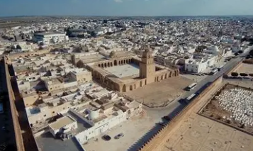
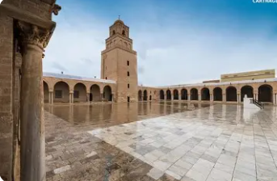
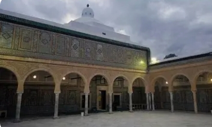
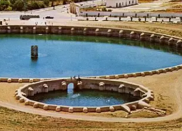
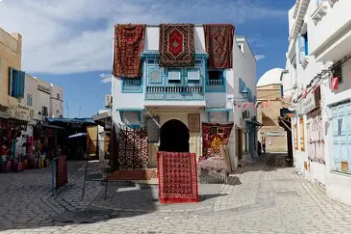

La Quatrième Ville Sainte de l'Islam

Kairouan est un gouvernorat situé au centre de la Tunisie, dans la région du Sahel. C'est la capitale spirituelle de la Tunisie et l'une des villes les plus sacrées de l'Islam, fondée en 670 par Oqba Ibn Nafaa.
La ville de Kairouan, chef-lieu du gouvernorat, est classée au patrimoine mondial de l'UNESCO. Elle est célèbre pour sa Grande Mosquée, la plus ancienne du Maghreb, et ses nombreux monuments islamiques d'une beauté architecturale exceptionnelle.
Le gouvernorat se distingue par son patrimoine religieux et architectural unique, son artisanat traditionnel renommé (tapis de Kairouan), ses bassins aghlabides et son rôle historique majeur dans la diffusion de l'Islam en Afrique du Nord.
La Grande Mosquée de Kairouan, fondée en 670, est un chef-d'œuvre de l'architecture islamique et l'une des plus anciennes mosquées du monde musulman.
Célèbre pour ses tapis traditionnels noués à la main, considérés parmi les plus beaux du monde arabe. L'artisanat du tapis est une tradition séculaire transmise de génération en génération.
Système hydraulique ingénieux du IXe siècle composé de deux grands bassins circulaires servant de réservoirs d'eau. Prouesse technique de l'époque islamique médiévale.
Kairouan est la patrie du Makroud, célèbre pâtisserie tunisienne aux dattes. La ville est également réputée pour ses autres spécialités culinaires traditionnelles.

Fondée en 670, reconstruite au IXe siècle, c'est un chef-d'œuvre architectural avec son imposant minaret de 31,5 mètres, sa cour pavée de marbre, ses 414 colonnes antiques et son mihrab décoré de carreaux de faïence lusترée exceptionnels.

Mausolée du compagnon du Prophète Mohamed, Abu Zama el-Balaoui. Édifice du VIIe siècle avec une architecture somptueuse : stucs sculptés, céramiques colorées, cours intérieures et coupoles magnifiques.

Réservoirs hydrauliques construits au IXe siècle sous la dynastie Aghlabide. Le grand bassin fait 128 mètres de diamètre et pouvait contenir 57 000 m³ d'eau. Exemple remarquable d'ingénierie islamique médiévale.

Vieille ville classée UNESCO avec ses remparts, ses portes monumentales, ses souks authentiques spécialisés dans les tapis et l'artisanat, et ses nombreuses mosquées et zaouïas historiques. Atmosphère spirituelle unique.